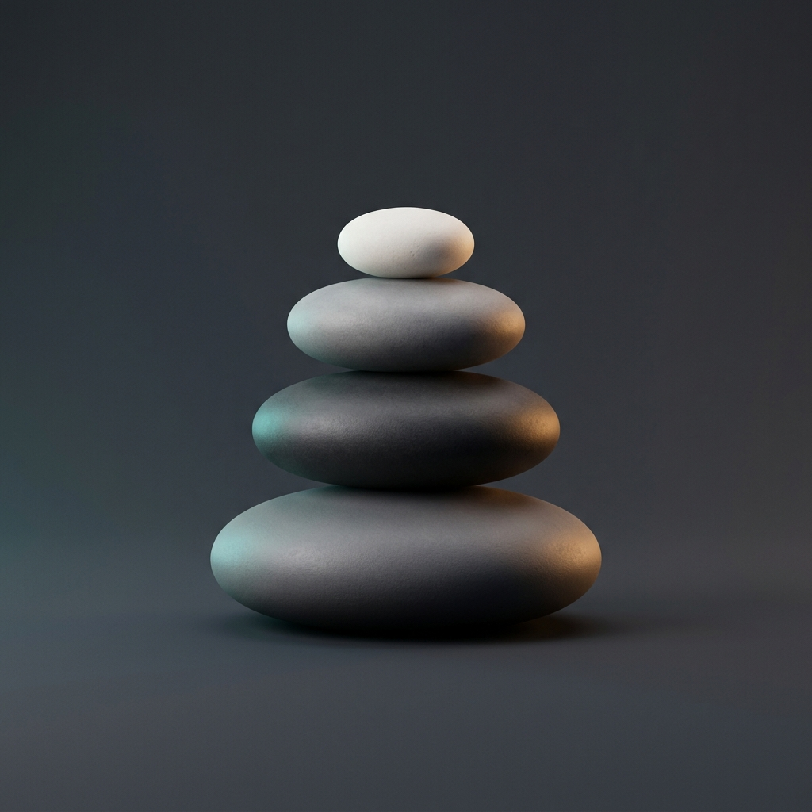
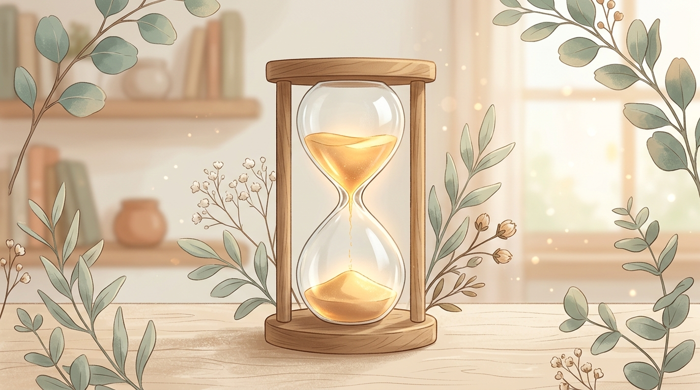

ZenFocus
“Breathe in calmness, focus with grace.”
Style: Zen Minimal
✨
Zen Minimal
(Clean dial & soft glass)
☕
Cozy Study Lofi
(Illustrated scenery & warm glow)
🌿
Botanical Hourglass
(Hero timer artwork showcase)
🌆
Cyberpunk Rain
(Neon reflections & atmospheric glow)
Atmosphere
Sage Forest
Warm Sand
Twilight Lavender
Nordic Slate
Midnight Bloom
Audio: Rain

Time is a river • Flow with it
Focus
Short Break
Deep Rest
Ready to immerse
25:00
Session 1 of 4
Focus Intention
0 tasks
Clear Finished
🍅 1
🍅 2
🍅 3
🍅 4
🍅 5
🎧
Gentle Rain
Calm Ocean Waves
Breezy Woodland
Warm Pink Noise
Lofi Girl / Chillhop Stream
Peaceful Piano Beats
Cozy Coffee Shop Beats
Mute Audio
🔉
Timer & Atmosphere Preferences
×
Durations (Minutes)
Focus Time
Short Break
Deep Rest
Rhythm & Intervals
Cycles before Deep Rest
Automation
Auto-commence Breaks
Auto-commence Focus Sessions
Chime Tone
Tibetan Singing Bowl (Deep & Harmonic)
Zen Temple Chime (Clean & Gentle)
Woodland Marimba (Warm & Subtle)